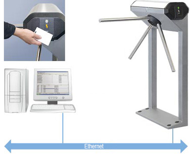
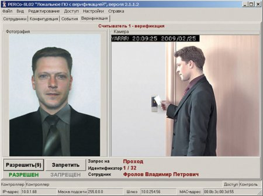
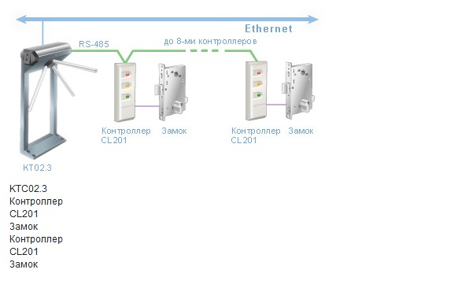
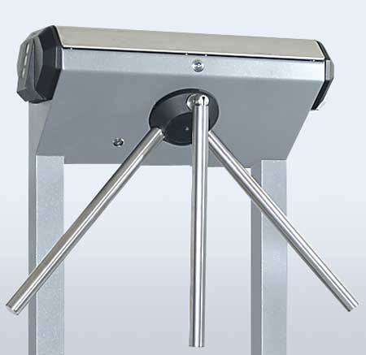
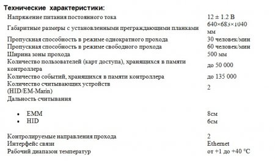

Электронная проходная KT02.3
Назначение
Электронная проходная PERCo-КТ02.3 – полностью укомплектованная система для организации контроля доступа на объект.

Встроенные считыватели
бесконтактных карт
Програмное
обеспечение
Стойка электронной
проходной
Состав
• турникет
• встроенный контроллер доступа
• два встроенных считывателя бесконтактных карт (HID/EM-Marin)
• пульт дистанционного управления
• программное обеспечение
Применение
Электронная проходная – готовая к работе система контроля доступа.
В зависимости от задач предприятия она может работать как:
• самостоятельная система контроля доступа на 1 точку прохода
• часть системы контроля доступа, обслуживающей несколько точек прохода
• автономный турникет, управляемый оператором от пульта дистанционного управления
КТ02.3 имеет возможность прямого подключения к компьютеру или к локальной вычислительной сети предприятия (сети Ethernet) для ввода данных и получения отчетов.
В стандартном комплекте Электронной проходной поставляется бесплатное программное обеспечение для организации прохода сотрудников по бесконтактным картам.
Установка PERCo-SL02 «Локальное ПО с видеоидентификацией» позволит организовать защиту от передачи пропуска другому лицу. На мониторе охранника отображается фото владельца карты, предъявленной считывателю. Охранник имеет возможность сравнить фото из базы данных системы и личность предъявителя карты (или его изображение, если установлена видеокамера).

Локальное ПО PERCo-SL02
с видеоидентификацией
Установка сетевого ПО системы PERCo-S-20 позволяет на базе электронной проходной решать задачи безопасности и повышения эффективности работы предприятия (например, контроль нарушений трудовой дисциплины, автоматизация учета рабочего времени и расчета заработной платы). КТ02.3 может применяться совместно с картоприемником, позволяя организовать изъятие карт посетителей.
В модели KT02.3 к встроенному в стойку турникета контроллеру можно подключить до 8-ми контроллеров замка PERCo-CL201 со встроенным считывателем, что обеспечивает экономичное оборудование 8-ми помещений системой контроля доступа.

Для работы с замковыми контроллерами необходимо сетевое программное обеспечение PERCo-SN01.
Для формирования зоны прохода KT02.3 может быть дополнена секциями ограждения.
Встроенный замок механической разблокировки позволяет открыть турникет с помощью ключа, обеспечив свободное вращение преграждающих планок в обоих направлениях.
Дополнительно стойка турникета может комплектоваться складывающимися планками «Антипаника».

Механическая разблокировка
ключом

Складывающиеся планки
«Антипаника»

Гарантийный срок эксплуатации
Гарантийный срок эксплуатации изделия составляет 24 месяца со дня продажи.
Исполнение:
Стойка турникета – сталь, покрытая порошковой краской
Крышка стойки турникета и преграждающие планки – нержавеющая сталь